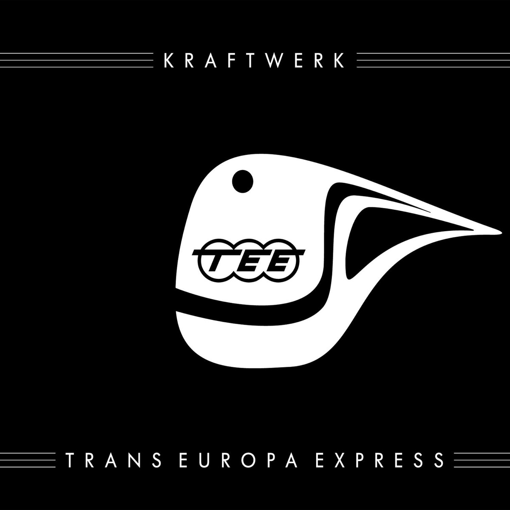
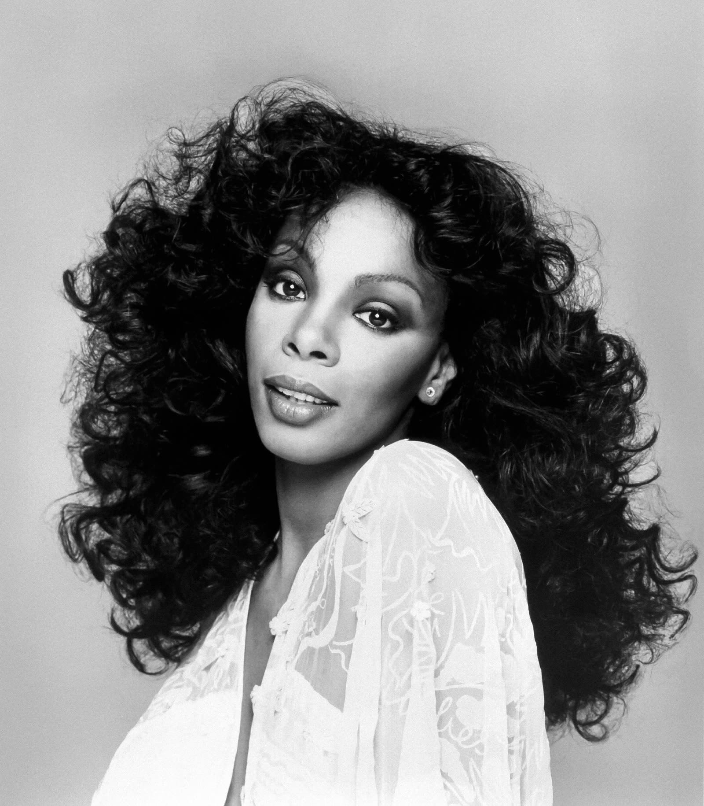
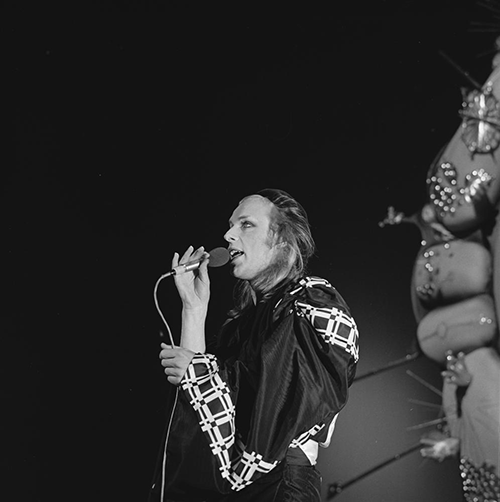

Van Frankrijk naar Hansa
Het begon niet in Berlijn. Op 1 september 1976 begon David Bowie aan een nieuwe plaat in het Château d'Hérouville, een kasteel in Frankrijk dat als studio dienstdeed. Daar werd het grootste deel van het album opgenomen. Eind september verhuisde het werk naar Hansa, een studio in West-Berlijn. Daar kwamen de laatste stukken, zoals "Weeping Wall" en "Art Decade", en daar werd de plaat in oktober 1976 gemixt, met Tony Visconti achter de knoppen. Bronnen verschillen een beetje over de precieze verdeling tussen Frankrijk en Berlijn, maar over de route is geen twijfel.
Iggy Pop was al eerder bezig. Zijn eerste soloplaat, The Idiot, produceerde Bowie in de zomer van 1976 en schreef hij grotendeels mee: de sessies begonnen in hetzelfde Château, gingen verder in Musicland in München en werden afgemixt in Hansa Studio 1. Iggy schreef de teksten, vaak geïmproviseerd. Zo had Bowie in korte tijd twee platen af waarvan niemand wist of ze zouden worden uitgebracht. Platenmaatschappij RCA wees Low af en wilde iets in de trant van Young Americans. De geplande release in november 1976 ging niet door. Bowie bewaarde de afwijzingsbrief.
Low verscheen uiteindelijk op 14 januari 1977. De ontvangst was verdeeld: Rolling Stone was niet onder de indruk, en ook NME was verdeeld: de ene recensent was vernietigend, de andere lovend. In het Verenigd Koninkrijk haalde de plaat nummer twee, alleen Slim Whitman hield hem van de top. In Nederland kwam hij op zes, in de Verenigde Staten op elf. Pas later groeide hij uit tot een van de meest geprezen platen van de jaren zeventig.
Een plaat in twee helften
Low is letterlijk in tweeën gedeeld. Op de ene kant staan korte, hoekige liedjes, op de andere kant overwegend instrumentale stukken, bijna zonder woorden. Het geluid van de eerste kant komt voor een belangrijk deel uit één apparaat. Visconti bewerkte de snaredrum van drummer Dennis Davis met een Eventide H910 Harmonizer. Zo'n apparaat verschuift de toonhoogte van een geluid, en daardoor klinkt de snare op Low gepitcht en een beetje onwerkelijk. Het werd het herkenbaarste drumgeluid van de plaat.
Brian Eno stond voor de andere kant. Hij was geen producent: Bowie en Visconti produceerden Low samen, en Eno had invloed zonder producerscredit. Hij speelde een draagbare EMS AKS-synthesizer, een kastje met een joystick en een aanraakgevoelig toetsenpaneel in plaats van een gewoon klavier. Volgens de memoires van Visconti nam Eno de instrumentale kant op in de tweede week in het Château, werkte hij veel alleen, met een click-track-machine, en vertrok hij aan het eind van die week. Dat is één bron, dus voorzichtig, maar het past bij die kant, die klinkt als muziek die in een kamer is gebouwd.

Warszawa, de lange instrumentale opener van kant twee: een lage synthesizerzucht waar Bowie woordeloos overheen zingt.
De woordloze zang van "Warszawa" zong Bowie er pas later overheen, nog tijdens de sessies in 1976. Het stuk ontstond uit een idee van Eno. Volgens Visconti speelde zijn zoontje Morgan, toen vier, een driestemmig motief op de studiopiano dat in de basis van het nummer terechtkwam. Zo kreeg een plaat die klonk als de toekomst toch een heel menselijke herkomst.
Waar kwam die toekomst vandaan? Bowie en Eno waren gefascineerd door Duitse groepen als Tangerine Dream, Neu!, Harmonia en Kraftwerk. Biograaf Seabrook ziet Neu! als de grootste invloed, mede omdat die band op haar plaat uit 1975 de zang en de instrumentale muziek ook zo verdeelde en een nummer heeft dat "Hero" heet. Criticus Ron Hart wijst liever naar Radio-Activity van Kraftwerk, uit hetzelfde jaar, als voorbeeld. Wie gelijk heeft, is een kwestie van interpretatie. Dat de richting Duits was, staat vast.
Machines uit Düsseldorf
Intussen werkte Kraftwerk in Düsseldorf aan Trans Europa Express. De opnames in hun eigen studio, Kling Klang, begonnen medio 1976 onder de werktitel "Europe Endless". Het album werd deels gemixt in The Record Plant in Los Angeles en afgerond in Düsseldorf en Hamburg. In maart 1977 verscheen het, in april de single. De titelsong verwijst naar de ontmoetingen van de band met Bowie en Iggy Pop, en daarmee ook naar Station to Station.

Trans Europa Express, een treinritme dat uit machines komt en toch voortdurend lijkt te schommelen.
Op "Franz Schubert" van dat album gebruikt Kraftwerk een op maat gemaakte sequencer met 32 stappen, de Synthanorma Sequenzer. Een sequencer speelt een korte reeks noten steeds opnieuw af, precies op de maat, zonder moe te worden. Dat principe, een patroon dat nooit afwijkt, zou in 1977 op meer plekken tegelijk opduiken.

Foto: Albumhoes · afbeelding van Apple Music, getoond als citaat bij de besprekingThe Idiot verscheen op 18 maart 1977, in dezelfde maand. Bowie toerde die lente ook met Iggy, van 1 maart tot 16 april, achter de toetsen, met Blondie als voorprogramma op de Noord-Amerikaanse concerten. Op "Nightclubbing" wilde Bowie echte drums, maar Iggy hield vast aan de oude drumcomputer, en dat is te horen: een traag, mechanisch tikkend ritme waaroverheen Iggy zingt als een man die uitgaat zonder er plezier in te hebben. Volgens Iggy zelf klinkt de plaat als een kruising tussen James Brown en Kraftwerk. Dat is een bewering van de zanger, maar de combinatie van funk en machine past.

Nightclubbing, een uitgaansnummer in slow motion, gedragen door een drumcomputer die nooit zin heeft.
Daarna keerde Iggy terug naar Hansa. Lust for Life werd in mei en juni 1977 opgenomen in "Hansa by the Wall", zoals de studio ook werd genoemd. Volgens Iggy was de plaat in acht dagen geschreven, opgenomen en gemixt, maar dat is zijn eigen verhaal en geen gemeten feit. Bowie, Iggy en Colin Thurston produceerden samen, de laatste onder de naam "Bewlay Bros". De muziek van de titelsong is van Bowie, de tekst van Iggy. Waar The Idiot zwaar en gesloten klonk, is Lust for Life een rockplaat met de ramen open. De plaat kwam aan het eind van de zomer uit, al verschillen de bronnen over de exacte datum.

Lust for Life, de titelsong, een doordenderend drumpatroon met een Iggy die weer zin heeft.
De toekomst kwam uit München
Terwijl in Berlijn gitaren werden opgenomen, maakte een Italiaanse producent in München iets dat de popmuziek nog veel verder zou verschuiven. Giorgio Moroder en Pete Bellotte produceerden Donna Summer in Musicland, met een 16-sporen recorder van Studer en een grote Harrison-mengtafel. De albumsessies liepen van oktober 1976 tot februari 1977. Bellotte schreef de tekst van "I Feel Love".

Foto: Francesco Scavullo; Distributed by Casablanca Records · Public domainHet geluid kwam uit een Moog, een modulair synthesizersysteem dat Moroder leende van de klassieke componist Eberhard Schoener. Schoeners assistent, Robby Wedel, loste het lastigste probleem op: hij synchroniseerde de sequencer met de bandmachine via een referentiepuls op spoor 16 van de band. Zo bleven machine en tape precies op elkaar lopen. Moroder noemde dat een openbaring en Bellotte noemde Wedel de ware vernieuwer van de sessie. De Moog liep snel uit de stemming, zodat in stukjes van twintig tot dertig seconden werd opgenomen, die daarna werden bijgestemd.
Het ritme is geheel of grotendeels uit synthesizers en sequencer opgebouwd, zonder het warme, onregelmatige van een groep mensen die samenspeelt. Daarbovenop zong Summer, in één take en in kopstem in plaats van haar gebruikelijke borststem. Volgens Sound on Sound duurde de opname van het nummer in totaal twee tot drie uur. Het stond op I Remember Yesterday, dat op 13 mei 1977 verscheen: een conceptalbum met een stijl per decennium, waarop "I Feel Love" de toekomst moest voorstellen.

I Feel Love, een stem boven een machine die nooit een maat mist.
De single kwam op 2 juli 1977 uit, eerst als B-kant van "Can't We Just Sit Down (And Talk It Over)". Dat werd omgedraaid. De plaat stond vier weken op nummer één in het Verenigd Koninkrijk, haalde nummer zes in de Verenigde Staten en stond onder meer in Nederland, Frankrijk, Italië en Australië bovenaan. Het nummer geldt als een van de eerste hits met herhalende synthesizerloops, een doorlopende kick op elke tel en een hi-hat die tussen de tellen klinkt, bijna volledig machinaal. "Een van de eerste" is veiliger dan "de eerste", maar als bouwsteen van house en techno een decennium later wordt het algemeen gezien. Volgens Bowie rende Eno enthousiast binnen over de single. Sound on Sound citeert Eno met de voorspelling dat de plaat de clubmuziek voor de komende vijftien jaar zou veranderen. Wanneer hij dat zei, is niet bevestigd.
Zomer in Studio 2
In juli en augustus 1977 werkte Bowie aan "Heroes" in Hansa Studio 2. Het is het enige deel van de Berlijnse trilogie dat helemaal in Berlijn is opgenomen. Studio 2 was de voormalige Meistersaal aan de Köthener Strasse 38, een grote zaal die de studio kreeg nadat de gebroeders Meisel het pand halverwege de jaren zeventig overnamen. De zaal lag vlak bij de Muur. Bowie noemde haar "the hall by the wall".
Eno was er weer bij. Hij gebruikte zijn Oblique Strategies, een stapel kaartjes met opdrachten om een vastgelopen sessie los te trekken, vooral bij de instrumentale stukken. Hij schreef mee aan vier van de tien nummers, maar produceerde ook dit album niet. Bowie schreef veel van de tekst ter plekke bij de microfoon. Robert Fripp nam zijn gitaarpartijen in een paar dagen op, volgens Eno zelfs in een paar uur, zonder de nummers vooraf te kennen. Volgens Visconti bestaat zijn partij op de titeltrack grotendeels uit feedback, die hij stuurde door zijn plek ten opzichte van de versterker te veranderen, met zijn signaal via Eno's Synthi.

"Heroes", de titelsong: een langzaam aanzwellende wand van synthesizers en feedback, met in het midden Bowie die steeds harder gaat zingen.
Ook de zang is een Visconti-verhaal. Volgens hem plaatste hij meerdere microfoons op verschillende afstanden van Bowie, die via noise gates openden naarmate Bowie harder zong. Zo klinkt de zaal mee op de plaat. Ook volgens Visconti was het zien van hem en de backingzangeres Antonia Maass bij de Muur een van de aanleidingen voor Bowies tekst, die na de backingtrack werd geschreven. Een eigen stuk gaat dieper op die tekst in.
 Foto: Albumhoes · afbeelding van Apple Music, getoond als citaat bij de bespreking
Foto: Albumhoes · afbeelding van Apple Music, getoond als citaat bij de besprekingHet album werd gemixt in Mountain Studios in Montreux, Zwitserland. De single "Heroes" verscheen op 23 september 1977 met "V-2 Schneider" als B-kant en bleef steken op nummer 24 in het Verenigd Koninkrijk. Het album, op 14 oktober, haalde nummer drie in het VK en 35 in de Verenigde Staten. NME en Melody Maker noemden het het album van het jaar. De status van de titelsong groeide pas later, onder andere door Live Aid in 1985.
Wat er overbleef
Eno liet Duitsland niet los. In juni 1977 nam hij in Keulen, in de studio van Conny Plank, een plaat op met Roedelius en Moebius van Cluster, met Holger Czukay op bas bij "Ho Renomo". In december verscheen zijn eigen Before and After Science: twee jaar werk, opgenomen in Londen en Keulen, met onder anderen Fripp, Phil Collins en Jaki Liebezeit als gasten, rock op kant één en ambient op kant twee.

Foto: AVRO · CC BY-SA 3.0 nl
Ho Renomo, van Cluster & Eno: een zacht pulserend stuk dat in Keulen werd opgenomen, kort voor "Heroes".
Het beeld van 1977 als jaar van de gitaarpunk is waar, maar onvolledig. Naast de snelle, korte platen uit Londen en New York werd ook gewerkt aan een tweede toekomst, koel, herhalend en elektronisch. Tussen januari en oktober verschenen Low, The Idiot, Trans Europa Express, "I Feel Love", Lust for Life en "Heroes". Ze werden gemaakt in Berlijn, Düsseldorf, München en Keulen, door mensen die elkaars werk volgden: Kraftwerk noemde Bowie en Iggy in een eigen titelsong, en Eno hoorde in "I Feel Love" volgens Bowie en Sound on Sound iets nieuws.
Dat verklaart waarom die platen zo lang meegaan. Ze draaien niet om een gitaarriff of een zanger, maar om een geluid. Een harmonizer op een snare, een sequencer die nooit uit de maat valt, een Moog die om de halve minuut moest worden bijgesteld, en een zaal vlak bij de Muur waarin een zanger steeds harder ging zingen.